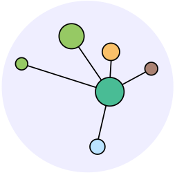

<!-- Página -->
<div style="height: 100vh;">
    <div class="d-flex toggled" id="wrapper">

        <!-- Sidebar -->
        <div class="" id="sidebar-wrapper" style="background-color: #0F66A0;">
            <div class="list-group list-group-flush">

                <!-- Sidebar Header -->
                <div class="sidebar-header">
                    <!--  -->
                </div>

                <!-- Sidebar Desc -->
                <a class="textlogo">
                    <div class="navbar-header">
                        <span class="verde">Terra</span><span class="amarelo">Brasilis</span>
                        <div><span class="azul"> Research Data</span>
                        </div>
                    </div>
                </a>

                <!-- Sidebar Search -->
                <div class="sidebar-search">
                <!--                     
                    <div class="input-group">

                                <input type="text" class="form-control" placeholder="Search">
                    
                                <div class="input-group-append">
                                    <button class="btn btn-secondary" type="button" style="background: white; color: #0F66A0;">
                                        <i class="fa fa-search" ></i>
                                    </button>
                                </div>
                            </div>
                    -->

                </div>
    
            </div>

        </div>
        <!-- /#sidebar-wrapper -->

        <!-- Page Content -->
        <div id="page-content-wrapper">
            <nav class="navbar navbar-dark" style="background-color: #0F66A0">

                <div class="nav-btn" style="color: white;">
                    <a class="navbar-toggler-icon" type="button" (click)="OpenMenu()()" ></a>
                </div>

                <a class="navbar-brand" [routerLink]="'/'">
                    <span class="verde textlogo">Terra</span><span class="amarelo textlogo">Brasilis</span> <span class="azul textlogo"> Research Data</span>
                </a>
                <div class="navbar-expand mr-auto">

                    <div class="navbar-nav">
                        <a class="nav-item nav-link textbar" [routerLink]="'/repositories'" style="color: white; ">Repositories</a>
                        <a class="nav-item nav-link textbar" [routerLink]="'/datasets'"  style="color: white;">Datasets</a>
                    </div>

                </div>
                <div class="navbar-expand ml-auto navbar-nav">

                    <div class="navbar-nav">

                        <a class="nav-item nav-link textbar" (mouseenter) ="hover()"  [routerLink]="'/login'" style="color: white;">Login</a>
                    </div>

                </div>
            </nav>

                <div class="main">
                    <router-outlet></router-outlet>

                </div>


        </div>
        <!-- /#page-content-wrapper -->

    </div>
    
    <!-- /#wrapper -->

            <!-- Footer -->
            <nav class="navbar navbar-dark mt-5 fixed-bottom" style="background-color: #0F66A0;">
                    <div class="navbar-expand m-auto navbar-text textbar">
                            © 2019 TerraBrasilis Reserach Data
                            <div class="navbar-expand ml-auto navbar-nav">
                        
                            </div>
                    </div>

                    <div class="navbar-nav">
                        
                            <a class="nav-item nav-link" href="https://github.com/terrabrasilis-research-data"><a class=" textbar" style="color: white;">Github</a></a>
                
                        </div>
                
                </nav>
</div>

